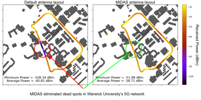

PolyChord is a data-science spin-out from the University of Cambridge's astrophysics group. We apply over 30 years of expertise to address complex academic, blue-sky, and commercial challenges.
Since 2017, we have collaborated with a diverse range of clients, including the Ministry of Defence, TfL, and National Highways to deliver cutting-edge, tailored solutions that provide a competitive advantage. Our world-class academic expertise ensures data-analysis challenges are met with speed, precision, and cost-effectiveness, driving meaningful results no matter the complexity of your needs.

Signal Extraction
Do you have a signal buried in noise and other ‘nuisance’ signals like temperature and seasonal variation? PolyChord have specialised tools that model out noise and unwanted signal variations to reveal the true signal buried in your data. This tool has been used by the likes of TfL and National Highways to allow them to monitor the health of bridge structures using low-cost accelerometers that can be widely deployed.
Learn More-
Optimisation of difficult functions
Many functional surfaces that industry needs to optimise exhibit multiple hills and valleys, and/or long thin ridges. The PolyChord sampler is uniquely capable of fully optimising such complicated functions, even in the presence of complex constraints on the permitted sampling space, and for 100s of input variables. We have successfully applied this tool to modelling the configuration of molecules for improving catalysts for mining, for optimising the position of sensors in a network, and for generating superior training sets for AI surrogates.
Learn More -
Anomaly and outlier detection
PolyChord’s cutting-edge data science applies multiple methods to robustly identify genuine anomalies and outliers to identify where there is a potential issue that needs to be inspected and fixed. This family of tools has been developed with companies like West Midlands Metro, LNER and Network Rail to automatically detect, locate issues on track, OLE, and pantographs and rank them by their severity.
Learn More -
AI Surrogates to accelerate inherently 'slow' simulations
Is your simulation fast, but not fast enough for involved analysis, such as investigation of the full input-parameter space, or to make robust predictions of future system behaviour? PolyChord’s advanced sampler delivers a full-coverage AI surrogate that delivers robust and complete answers to all your complex questions in minutes, rather than in days or weeks. This tool returns almost real-time simulation output and has been applied by AVL Advanced Simulation Technologies.
Learn More -

Data-collection strategy optimisation
Working with the Defence Science and Technology Laboratory (DSTL), we have developed MIDAS - a cutting-edge Bayesian methodology for deciding what kind of data should be next be collected in order to deliver optimal results. We have showcased MIDAS beating human opponents in a simple game of capture the flag. In these games, both MIDAS and the human teams had 4 drones moving in a simple 2D space in order to find their opponents communications station in the least time.
Learn More